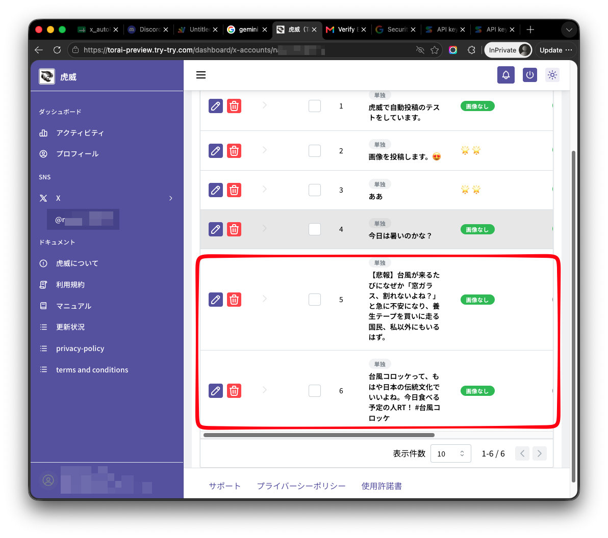
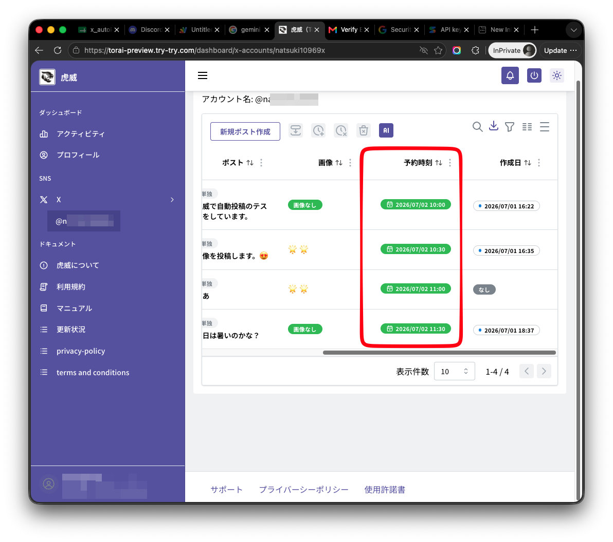

POSTING GROUP｜投稿グループ
AIで投稿案を一括作成毎回ゼロから考える負担を減らす
自分の言葉で確認・編集経験や考え方を加えて調整
日時をまとめて予約狙った時刻へ一括設定
投稿完了を通知スマートフォンで結果を確認
投稿準備の時間を大幅に減らす。
Googleアカウントで無料登録。無料登録だけではサブスクリプションは開始されません。
QUALIFY
その理由を知りたくありませんか？
UNDERSTAND
毎日投稿し、反応が少なければ内容を変え、それでも伸びなければ、さらに投稿数を増やす。
けれど、投稿を作るだけで時間を使い切り、誰に届き、誰が反応し、何を改善すべきかを確認できていませんでした。
EDUCATE
投稿後の反応を確認しなければ、伸びた理由も、伸びなかった理由も分かりません。
STIMULATE
自動化するのは繰り返し作業とデータ整理。人は、判断・対話・改善に集中できます。
投稿準備の時間を大幅に減らす。
反応を育てるマーケティングへ。
REAL SCREENS

複数の投稿候補をまとめて準備します。

確認・編集後、投稿日時を設定します。

投稿データと反応者を見つけやすく整理します。※開発中の画面イメージ

紹介状況と獲得報酬を管理画面で確認できます。
PRICE
現在のX APIは、固定月額ではなく利用量に応じた従量課金。投稿数と取得データ量を調整しながら、小さく始められます。
※虎威の月額料金とは別にX API利用料金が必要です。料金は投稿数、取得データの種類・件数、為替、税金、X側の料金改定などにより変動します。月1,000円は少ない投稿・取得量で運用する場合の予算例であり、実際の料金を保証するものではありません。最新の単価はX Developer Consoleでご確認ください。
INITIAL LOGIN OFFER
Googleアカウントで無料登録し、サブスクリプション開始画面で初月限定価格をご確認ください。
無料登録して初月限定オファーを確認無料登録だけでは課金されません。内容と必要な費用を確認してから申し込みを判断できます。
REFERRAL REWARDS
専用の紹介リンクから登録した方が条件を満たすと、紹介人数に応じた無料期間や割引を受け取れます。
※紹介条件・報酬内容は変更される場合があります。最新情報は管理画面でご確認ください。
FAQ
いいえ。無料登録しただけではサブスクリプションは開始されません。
いいえ。虎威の月額料金とは別に、投稿やデータ取得に使用するX API料金が必要です。
投稿数、取得するデータの種類・件数により異なります。少ない利用量から始め、予算に合わせて調整できます。
いいえ。虎威は自動でいいね、リポスト、返信を行いません。対応はユーザー自身が判断します。
公開前にユーザーが内容を確認し、自分の言葉へ編集できます。
クレジットカード契約はStripeの管理画面から解約でき、契約期限までは利用できます。
YOUR NEXT MOVE
投稿作業を減らして、判断・対話・改善を続けるために。
Googleアカウントで無料登録初回ログイン後24時間、初月限定オファーをご確認いただけます。